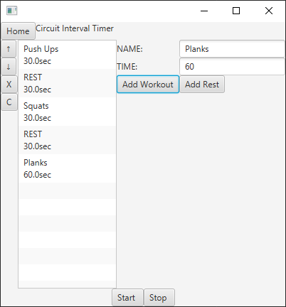

Inspired by the rise in stay at home circuit workouts during the COVID-19 pandemic, I found that it was quite difficult creating the timed intervals for these workouts using the timers usually found on the phones. I built this program using JavaFX as a solution for it. The user can add exercises along with their names and also add rest intervals. It also makes use of timers. It was made as a prototype to familiarize myself with developing GUI-based programs. |
 |
|
Java
JavaFX
|
|---|